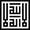

Original Quran
Preparing the Quran…
Show Translation
Quran with Taskheel Hafs
Quran with Taskheel Warsh
Choose Font:
Jazm- Early Script
Uthmani- Turkish Script
Abbasi Script
Dark Theme
Install App
Update App